Στη γεωμετρία, το σημείο και η γραμμή (ειδικότερα η ευθεία) αποτελούν πρωταρχικές έννοιες, οι οποίες δεν ορίζονται αυστηρά αλλά γίνονται αντιληπτές μέσα από την εμπειρία και περιγράφονται από αξιώματα.
1 Το Σημείο
Το σημείο είναι η πιο στοιχειώδη έννοια του χώρου και ο Ευκλείδης το περιέγραψε ως «εκείνο που δεν έχει μέρη».
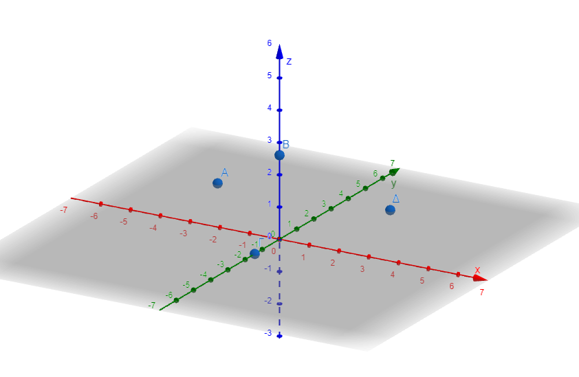
* Διαστάσεις: Το σημείο έχει μηδενικές διαστάσεις (δεν έχει μήκος, πλάτος ή ύψος), γεγονός που το καθιστά πρακτικά αόρατο και άυλο.
* Αναπαράσταση και Συμβολισμός: Σχεδιάζεται συνήθως ως μια τελεία και συμβολίζεται με ένα κεφαλαίο γράμμα (π.χ. \(A, B, \Gamma\)).
* Λειτουργία: Προσδιορίζει μια θέση στον χώρο και αποτελεί το δομικό στοιχείο όλων των άλλων γεωμετρικών σχημάτων.
2 Η Γραμμή και η Ευθεία
Η γραμμή μπορεί να θεωρηθεί ως μια συνεχής σειρά θέσεων που παίρνει ένα κινούμενο σημείο. Η ευθεία γραμμή είναι ένα γεωμετρικό σχήμα μίας διάστασης (μήκος χωρίς πλάτος).
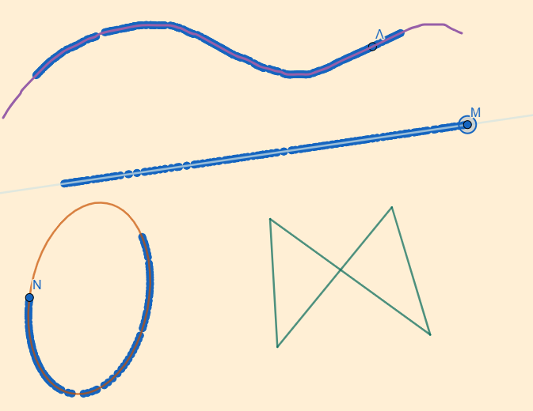
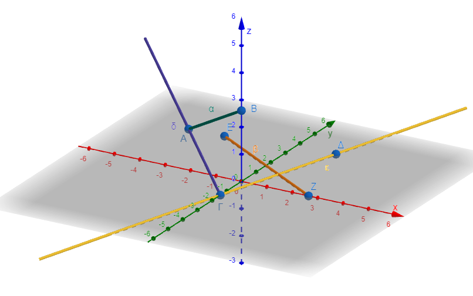
* Χαρακτηριστικά: Η ευθεία έχει άπειρο μήκος, δεν έχει αρχή ούτε τέλος και εκτείνεται απεριόριστα και προς τις δύο κατευθύνσεις.
* Συμβολισμός: Συμβολίζεται με ένα μικρό γράμμα (π.χ. \(\epsilon, \zeta\)) ή με δύο κεφαλαία γράμματα σημείων που ανήκουν σε αυτήν (\(AB\)).
* Είδη Γραμμών:
* Ευθύγραμμο τμήμα: Το μέρος μιας ευθείας που περικλείεται μεταξύ δύο σημείων (άκρα), έχοντας πεπερασμένο μήκος.
* Ημιευθεία: Το τμήμα μιας ευθείας που ξεκινά από ένα σημείο (αρχή) και εκτείνεται επ’ άπειρον προς μία κατεύθυνση.
* Τεθλασμένη γραμμή: Μια γραμμή που αποτελείται από διαδοχικά ευθύγραμμα τμήματα που δεν είναι όλα συνευθειακά.
* Καμπύλη γραμμή: Γραμμές που δεν είναι ευθείες, όπως ένας κύκλος.
2.1 Σχέσεις Σημείων και Γραμμών
Η Ευκλείδεια Γεωμετρία στηρίζεται σε βασικές παραδοχές (αξιώματα) για τη σχέση αυτών των εννοιών:
* Προσδιορισμός ευθείας: Από δύο οποιαδήποτε διαφορετικά σημεία διέρχεται μία και μόνο μία ευθεία.
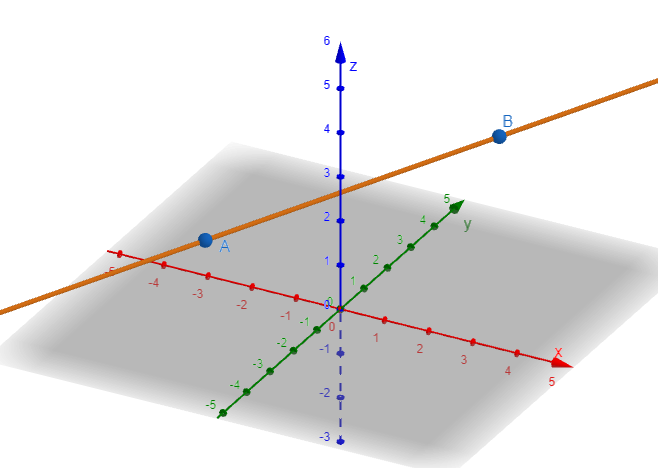
* Δέσμη ευθειών: Από ένα μόνο σημείο διέρχονται άπειρες ευθείες.
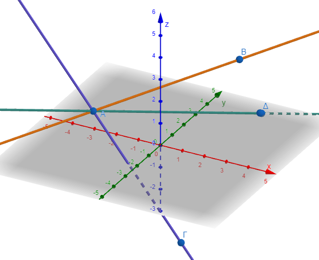
* Συνευθειακά σημεία: Τα σημεία που ανήκουν στην ίδια ευθεία ονομάζονται συνευθειακά.
* Σχετικές θέσεις ευθειών: Δύο ευθείες στο ίδιο επίπεδο μπορεί να ταυτίζονται (όλα τα σημεία κοινά), να τέμνονται (ένα κοινό σημείο) ή να είναι παράλληλες (κανένα κοινό σημείο). Στον τρισδιάστατο χώρο, αν δύο ευθείες δεν τέμνονται και δεν είναι παράλληλες, ονομάζονται ασύμβατες.
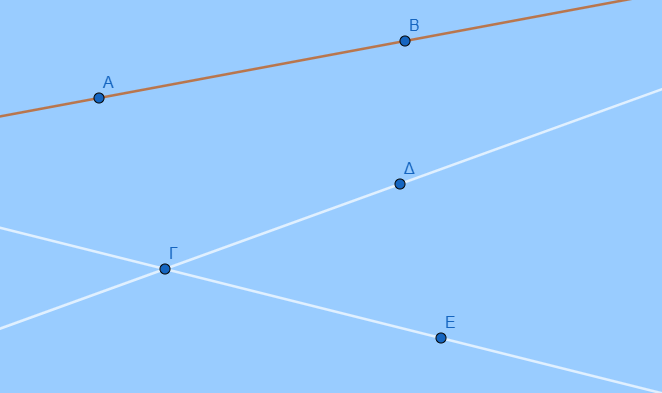
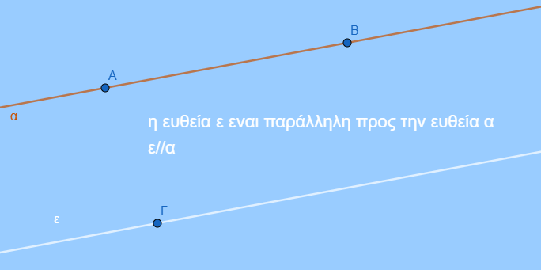
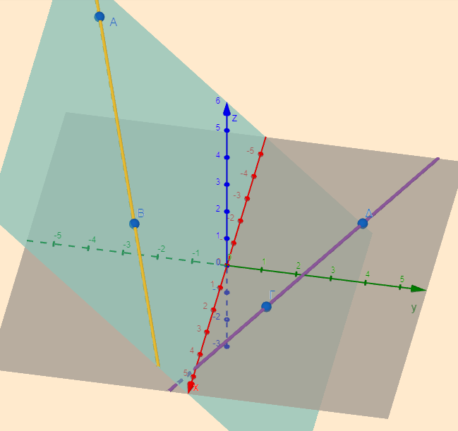
- Αντικείμενες ημιευθείες: Δύο ημιευθείες που έχουν την ίδια αρχή, βρίσκονται στην ίδια ευθεία (ίδιο φορέα) και έχουν αντίθετες κατευθύνσεις.
- Σημείωση: Αν δύο ευθείες τέμνονται σχηματίζοντας ορθές γωνίες, ονομάζονται κάθετες (\(\epsilon \perp \zeta\)).
2.2 Ενδεικτικές Ασκήσεις
Α. Ερωτήσεις Θεωρίας (Σωστό/Λάθος & Συμπλήρωση Κενών)
Από ένα σημείο διέρχονται ………… ευθείες.
Δύο ημιευθείες με κοινή αρχή είναι πάντα αντικείμενες. (Λάθος, πρέπει να ανήκουν στην ίδια ευθεία).
Πόσες διαστάσεις έχει ένα σημείο; (0).
Πόσες ευθείες διέρχονται από τρία μη συνευθειακά σημεία; (Καμία).
Β. Ασκήσεις Ονοματολογίας και Σχεδίασης
- Σχεδιάστε μια ευθεία \(x'x\) και σημειώστε τέσσερα διαδοχικά σημεία \(A, B, K, \Delta\).
Γράψτε όλα τα ευθύγραμμα τμήματα που ορίζονται (π.χ. \(AB, AK, A\Delta, BK, B\Delta, K\Delta\)).
Ονομάστε την αντικείμενη ημιευθεία της \(Kx'\) (είναι η \(Kx\) ή \(K\Delta\)).
Σχεδιάστε ένα ευθύγραμμο τμήμα \(HK\) και ένα σημείο \(\Lambda\) εκτός αυτού.
Αν \(M\) είναι το μέσο ενός τμήματος \(AB\), σχεδιάστε τις αντικείμενες ημιευθείες \(MA\) και \(MB\).
Στο παρακάτω σχήμα ονομάστε όλες τις ημιευθείες.
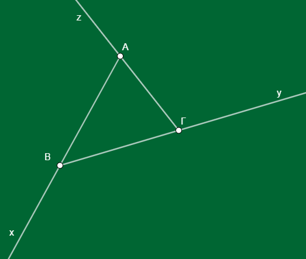
Στο παρακάτω σχήμα ονόμασε όλα τα σημεία και μετά γράψε όλα τα ευθύγραμμα τμήματα που σχηματίζονται.
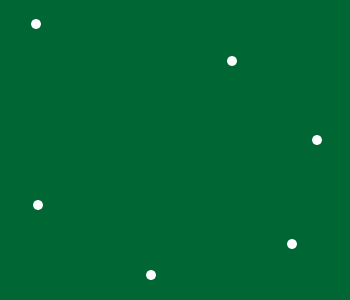
Γ. Σύνθετα Προβλήματα Λογικής
Υπολογισμός Πλήθους: Αν δοθούν 6 σημεία στο επίπεδο, ανά 3 μη συνευθειακά, πόσες ευθείες ορίζονται συνολικά; (Απάντηση: 15 ευθείες).
Κοινά Σημεία: Πόσα κοινά σημεία έχουν οι ημιευθείες \(AB\) και \(BA\) αν το \(A\) και το \(B\) ανήκουν στην ίδια ευθεία; (Άπειρα, όλο το τμήμα \(AB\)).
Σχετικές Θέσεις: Σχεδιάστε τρεις ευθείες \(\epsilon, \lambda, \sigma\) που να μην είναι παράλληλες ανά δύο και να μην διέρχονται και οι τρεις από το ίδιο σημείο. Πόσα σημεία τομής προκύπτουν; (3 σημεία).
3 Θεωρία: Το Επίπεδο
Το επίπεδο είναι μια πρωταρχική έννοια που δεν ορίζεται αυστηρά, αλλά γίνεται αντιληπτή μέσω εμπειρικών παραδειγμάτων, όπως η επιφάνεια ενός καθρέφτη, ενός λείου δαπέδου ή ενός τραπεζιού.
Διαστάσεις και Έκταση: Το επίπεδο έχει δύο διαστάσεις (μήκος και πλάτος). Θεωρείται μια επιφάνεια άπειρη, χωρίς πάχος, που επεκτείνεται απεριόριστα προς όλες τις κατευθύνσεις, στερούμενη αρχής και τέλους.
Συμβολισμός: Συνήθως σχεδιάζεται ως παραλληλόγραμμο και συμβολίζεται με ένα κεφαλαίο γράμμα (π.χ. \(P\) ή \(\Pi\)) ή ένα μικρό ελληνικό γράμμα (π.χ. \(\pi, \sigma\)).
Καθορισμός Επιπέδου: Ένα επίπεδο προσδιορίζεται μονοσήμαντα από:
- Τρία μη συνευθειακά σημεία (δηλαδή σημεία που δεν ανήκουν στην ίδια ευθεία).
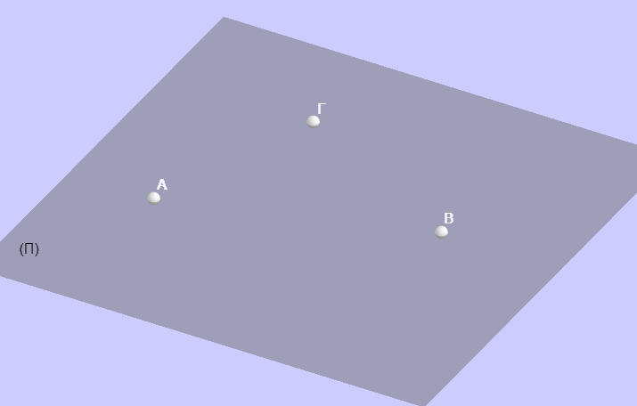
Μια ευθεία και ένα σημείο εκτός αυτής.
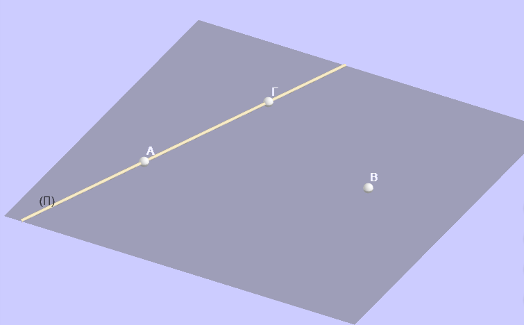
Δύο τεμνόμενες ευθείες.
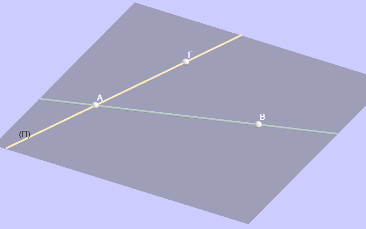
Δύο παράλληλες ευθείες.
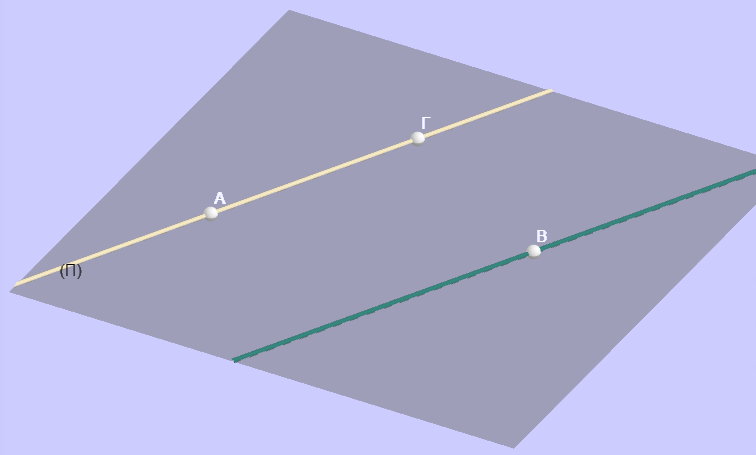
4 Θεωρία: Το Ημιεπίπεδο
Όπως ένα σημείο χωρίζει μια ευθεία σε δύο ημιευθείες, έτσι και μια ευθεία χωρίζει ένα επίπεδο σε δύο μέρη.
Ορισμός: Κάθε ευθεία \(\epsilon\) ενός επιπέδου το χωρίζει σε δύο μέρη που ονομάζονται ημιεπίπεδα.
Αρχική Ευθεία ή Σύνορο: Η ευθεία \(\epsilon\) ονομάζεται όριο ή σύνορο των δύο ημιεπιπέδων. Τα δύο ημιεπίπεδα δεν έχουν κοινά σημεία μεταξύ τους, εκτός από τα σημεία της αρχικής ευθείας.
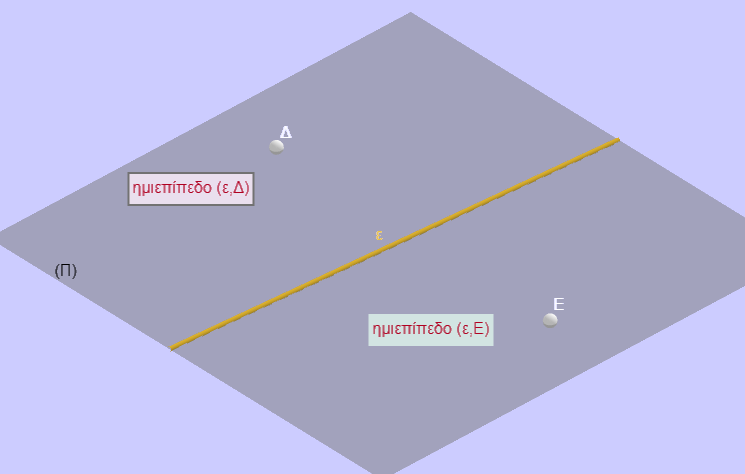
Συμβολισμός: Ένα ημιεπίπεδο συμβολίζεται με την αρχική ευθεία και ένα σημείο του, π.χ. \((\epsilon, A)\).
Κυρτότητα: Το ημιεπίπεδο είναι κυρτό σύνολο. Αυτό σημαίνει ότι αν επιλέξουμε δύο τυχαία σημεία \(M\) και \(N\) εντός ενός ημιεπιπέδου, ολόκληρο το ευθύγραμμο τμήμα \(MN\) θα βρίσκεται μέσα στο ίδιο ημιεπίπεδο.
4.1 Ενδεικτικές Ασκήσεις και Εφαρμογές
Α. Ερωτήσεις Κατανόησης
- Γιατί ένα σκαμνί με τρία πόδια δεν “τρεκλίζει” ποτέ;
- Απάντηση: Επειδή τρία σημεία ορίζουν πάντα ένα μοναδικό επίπεδο, τα άκρα των τριών ποδιών θα εφάπτονται πάντα στο επίπεδο του δαπέδου
- Πόσα επίπεδα διέρχονται από δύο σημεία \(A\) και \(B\);
- Απάντηση: Από δύο σημεία διέρχονται άπειρα επίπεδα (φανταστείτε τις σελίδες ενός βιβλίου που ανοίγουν γύρω από τη ράχη του).
- Ποιο είναι το όριο ενός ημιεπιπέδου;
- Απάντηση: Το όριο είναι η ευθεία που χώρισε το αρχικό επίπεδο στα δύο.
Β. Ασκήσεις Σχεδίασης και Λογικής
Σχεδίαση Ημιεπιπέδων: Σχεδιάστε ένα επίπεδο \(\pi\) και μια ευθεία \(\epsilon\) εντός αυτού. Ονομάστε τα δύο ημιεπίπεδα που προκύπτουν.
Σχετικές Θέσεις: Αν δύο σημεία \(A\) και \(B\) βρίσκονται σε διαφορετικά ημιεπίπεδα ως προς μια ευθεία \(\epsilon\), τι συμβαίνει με το ευθύγραμμο τμήμα \(AB\);
- Απάντηση: Το τμήμα \(AB\) υποχρεωτικά τέμνει την ευθεία \(\epsilon\).
- Συνεπίπεδα Σχήματα: Αναγνωρίστε στην αίθουσα διδασκαλίας δύο επίπεδα που είναι παράλληλα (π.χ. δάπεδο και οροφή) και δύο που τέμνονται (π.χ. δύο διπλανοί τοίχοι).
- Πολλαπλασιασμός δυνάμεων με την ίδια βάση: \(α^μ \cdot α^ν = α^{μ+ν}\).
- Διαίρεση δυνάμεων με την ίδια βάση: \(α^μ : α^ν = α^{μ-ν}\).
- Δύναμη γινομένου: \((α \cdot β)^ν = α^ν \cdot β^ν\).
- Δύναμη πηλίκου: \((\frac{α}{β})^ν = \frac{α^ν}{β^ν}\).
- Δύναμη δύναμης: \((α^μ)^ν = α^{μ \cdot ν}\).